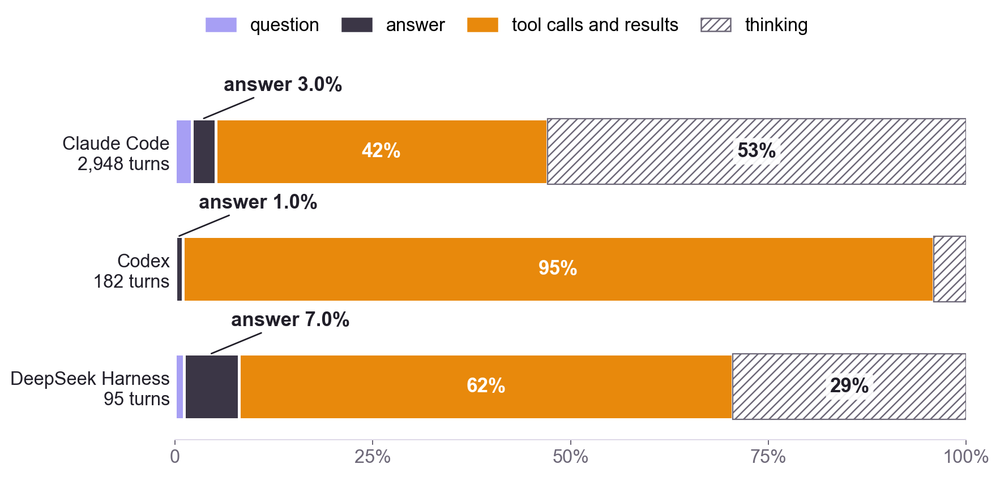
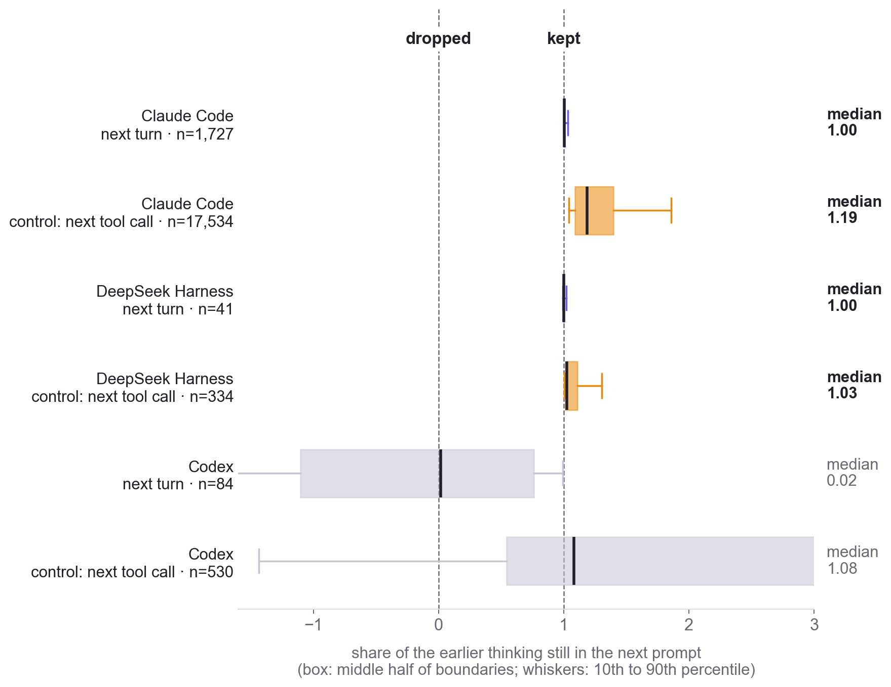
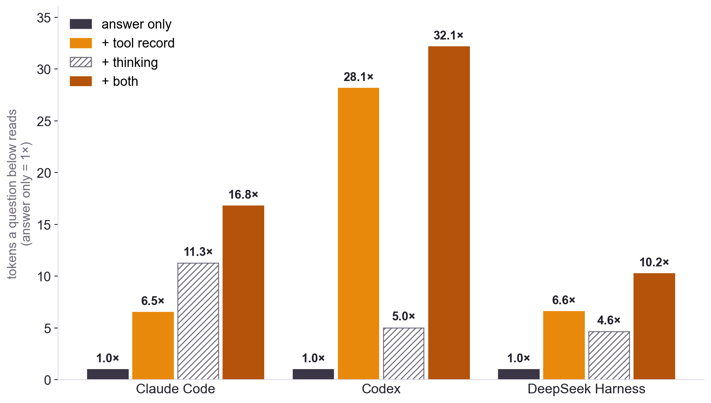

Where an Agent Turn's Tokens Go
Thinking and tool traffic outweigh the answer a person reads, and current runtimes keep both in context. What that means for what a canvas passes on.
The question
ThoughtDAG imports agent sessions onto a canvas: one node per turn, carrying the question, the answer and the tool steps. A question asked below a node reads what the canvas compiles from the wires above it. So two things have to be decided for every agent turn: what of it passes on to the questions below, and what the card should show about the rest.
A turn has four parts: the question, the answer, the tool calls with their results, and the thinking. This note measures how large each part is in real sessions, and whether the agent runtimes themselves keep a turn's thinking in context for later turns. It asks three questions:
- What is an agent turn made of?
- Does the runtime carry a turn's thinking into the next prompt?
- How much would a question below a turn read under each handoff rule?
Highlights
- The answer is a small part of a turn. It was 3.0% of a Claude Code turn's tokens, 1.0% of a Codex turn's and 7.0% of a DeepSeek Harness turn's. Tool calls and results were 42%, 95% and 62%. Thinking was 53%, 4% and 29%. The mix follows what each runtime was used for (the Codex sessions here were mostly computer-use tasks) and will look different for someone else; the answer stayed a few percent of the turn in all three.
- On the models in these logs, thinking stays in the agent's own context. At 90% of 1,727 Claude Code turn boundaries and all 41 DeepSeek Harness ones, the next turn's prompt grew by the previous turn's whole output, thinking included. This matches the providers' documentation. The claim that thinking never reaches later turns holds for some older models and some request shapes, not for these.
- A Claude Code log holds about a fifth of the thinking. The log keeps a summary. The billed output counts 39.0 million thinking tokens against 8.7 million tokens of summary text, so counting the text undercounts by about 4.5 times.
- A tenth of the turns carry most of the tool traffic. The heaviest tenth held 53% (Claude Code), 62% (Codex) and 80% (DeepSeek Harness) of the stored tool record. That shape calls for a switch on each turn rather than one rule for a whole canvas.
Data and method
Corpus. Every session file modified in the 30 days to October 27, 2026 on the author's machine, from four agent runtimes. The work was software development on this project and others, and research writing. The runtimes were used for different kinds of work: most of the Codex sessions were hands-on computer-use tasks, operating applications and running commands to get something done, which is why tool traffic is so large in its turns. This is one person's usage, and the share of each part will differ widely with how someone uses an agent. Only aggregate numbers leave the machine; the published per-turn rows are token counts.
| Runtime | Session files | Turns | Turns with tool calls | Median tool steps | Model calls | Models (share of calls) |
|---|---|---|---|---|---|---|
| Claude Code | 69 | 2,948 | 2,205 | 9 | 38,476 | claude-opus-5-5 89%, Fable 5.1 and 5, Opus 5, others |
| Codex | 76 | 182 | 157 | 18 | 8,903 | gpt-6-astra 93%, gpt-5.6-sol, gpt-6.1-sol |
| DeepSeek Harness | 36 | 95 | 59 | 5 | 1,330 | deepseek-flash, deepseek-v4-flash |
| Pi | 7 | 12 | 6 | 6 | 57 | deepseek-v4-flash |
Turns. Each file goes through the importer ThoughtDAG itself uses, so a turn here is exactly a node on the canvas: one message the person typed, and everything the agent did until the next one. Codex child threads are left out of the turn counts, since their parent turn already holds their result. Pi has too few turns to say much; it appears in the tables and not in the figures.
Parts of a turn. Question and answer as the card shows them. Tool calls and results at their original size: the importer clips each result to 4,000 characters for the canvas, and its clip mark records the original length. Thinking as described next.
Counting. Thinking uses the providers' own counts wherever a log has them. Codex logs a running reasoning total (its thinking itself is encrypted). Pi logs a reasoning count per message. A Claude Code log keeps only a summary of the thinking, so a message's thinking is its billed output minus what it visibly wrote. DeepSeek returns its reasoning whole, so DeepSeek Harness thinking is counted from the text. Text is counted with the canvas's own estimator: one token per CJK character, four characters per token otherwise. For every runtime, the importer's thinking total agrees with the sum of the per-call counts within 0.2%.
What a turn is made of
| Share of a turn's tokens | Question | Answer | Tool calls and results | Thinking |
|---|---|---|---|---|
| Claude Code | 2.1% | 3.0% | 41.9% | 52.9% |
| Codex | 0.1% | 1.0% | 94.9% | 4.1% |
| DeepSeek Harness | 1.1% | 7.0% | 62.4% | 29.5% |
| Pi (12 turns) | 26.2% | 5.6% | 53.0% | 15.2% |

Measured against its own answer, a typical turn looks like this (median, with the 90th percentile in brackets):
| Per turn | Tool calls and results ÷ answer | Thinking ÷ answer |
|---|---|---|
| Claude Code | 9.2× (38×) | 9.3× (48×) |
| Codex | 70× (197×) | 3.6× (10.5×) |
| DeepSeek Harness | 4.4× (45×) | 3.0× (22×) |
The runtimes differ in their mix. The Codex turns here are long tool loops (a median of 18 steps) with large command output, and thinking was 27% of their output tokens. Claude Code thinks the most: 70% of its output tokens were thinking. DeepSeek Harness sits between, at 48%.
One person's usage. The mix reflects what each runtime was used for in this sample more than the runtime itself. Most of the Codex sessions were transactional computer-use work, such as operating applications and running commands to finish a task, so tool calls and their results fill 95% of its turns. Someone who uses these agents differently will see different shares, possibly very different ones. What held in all three runtimes is that the answer a person reads at the end was a small minority of the turn's tokens: 1.0 to 7.0%.
Does the runtime keep the thinking?
A common answer is no: the model thinks, answers, and the next turn starts without the thinking. The providers' documentation, read on October 27, 2026, says it depends on the model and the request:
- Anthropic. Claude Opus 4.5 and later Opus models, Sonnet 4.6 and later, Haiku 5.5, and the Fable and Mythos models keep thinking blocks from all prior turns in context and bill them as input. Earlier models keep only the last turn's. (Thinking ↗)
- DeepSeek. In thinking mode, a request that declares tools must pass back the reasoning of all previous turns, and it is concatenated into the context. Without tools it is ignored. (Thinking mode ↗)
- OpenAI. Models before GPT-5.6 do not render reasoning from earlier turns into the next sample by default; GPT-5.6 models do. (Reasoning ↗)
All three keep the thinking between tool calls inside one turn. An agent harness always declares tools, so the DeepSeek rule that applies to DeepSeek Harness is the first one.
Measured from the providers' own counts
Every model call logs the size of the prompt it was sent (input plus cache reads and writes). Across a turn boundary, the next prompt grows by whatever the runtime kept from the previous turn, plus the new message. If the thinking is kept, the growth equals the last call's whole output plus the new message. If it is dropped, the growth is the visible output plus the new message, minus all the thinking the turn had been holding between its tool calls. We report where each boundary falls between the two as the share of the previous turn's thinking still present: 1 means kept, 0 means dropped. Boundaries with compaction, a model change, images, or under 1,000 tokens of thinking are skipped.
Between tool calls inside a turn, where all three APIs keep the thinking, the same measure (after subtracting the tool results) is a control. It should read 1, or a little above where the runtime adds other content.
| Runtime | Next turn: n · median (interquartile range) | Control, next tool call: n · median (IQR) | Reading |
|---|---|---|---|
| Claude Code | 1,727 · 1.00 (1.00 to 1.01) | 17,534 · 1.18 (1.08 to 1.39) | kept |
| DeepSeek Harness | 41 · 1.00 (1.00 to 1.00) | 334 · 1.03 (1.01 to 1.11) | kept |
| Codex | 84 · 0.02 (−1.08 to 0.76) | 530 · 1.08 (0.54 to 3.09) | not readable by this method |
| Pi | 1 | 8 | too few |

Most Claude Code boundaries fall within 0.9 to 1.1 of the kept reading (1,548 of 1,727, 90%); 78 (4.5%) fall below 0.5. A boundary where the runtime also cleared older content, such as stale tool results, shrinks the prompt and pulls the share down, and this arithmetic cannot tell the two apart. All 41 DeepSeek Harness boundaries fall within 0.95 to 1.06.
For Codex, the logs do not support a reading. Two likely reasons: an auxiliary review model logs its usage in the same stream as the main model, and history the runtime trims before sending is not visible in its log. Its documentation is the only evidence here.
For the Claude Code and DeepSeek Harness sessions in this sample, then, each later prompt carried the thinking of every earlier turn until the runtime compacted its history. Thinking is paid for twice: once as output when generated, and again as input in each later call that re-reads it, much of it at cache-read prices.
What a canvas should pass on
The canvas's handoff is a separate decision from the runtime's. A question asked below a turn on the canvas reads what the canvas compiles from the wires, not the runtime's prompt. We compared handoff rules by how many tokens that question would read from the turn, relative to handing on the question and answer alone:
| Pooled (median per turn) | + tool record | + thinking | + both |
|---|---|---|---|
| Claude Code | 6.5× (5.3×) | 11.3× (8.9×) | 16.8× |
| Codex | 28.1× (16.7×) | 5.0× (4.0×) | 32.1× |
| DeepSeek Harness | 6.6× (2.1×) | 4.6× (3.2×) | 10.2× |

ThoughtDAG now handles an agent turn this way:
- The answer always passes on.
- The tool record arrives switched off, with one switch on each turn. While it is off, a question below reads one line naming the files the turn touched, so it can ask for their current contents. Because a tenth of the turns carry most of the weight, the switch sits on the turn, not on the canvas.
- Thinking never passes on. It stays on the card as a count. The turn's bar draws what passes on as solid and what stays as hatched.
This note measures size, not effect. Whether a question below answers better with the tool record or the thinking in its context was not tested here.
What this note does not establish
The logs come from one month of the author's own use: a convenience sample whose mix of work shapes the numbers. The Codex sessions, for example, are mostly computer-use tasks with long tool loops. Counts taken from text are estimates and do not use each provider's tokenizer; the Claude Code thinking count rests on estimating the visible part of each message well. The carry-over test reads what the prompt contained according to the providers' usage numbers, not what the model attended to. It reads nothing for Codex, and Pi has too few turns. Token shares are not cost shares: cache reads are billed at a fraction of the input price.
It establishes a narrower result: in these agent sessions the answer was a small part of each turn, tool traffic and thinking were most of it, and on Claude Code and DeepSeek Harness the thinking stayed in the runtime's context for later turns.
Reproduce and inspect
The script runs on the machine that holds the logs and writes aggregate numbers only.